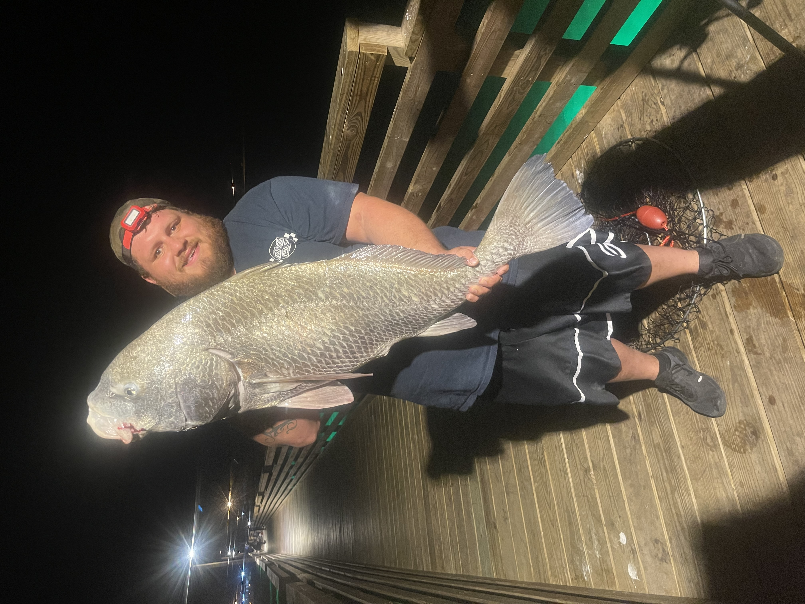
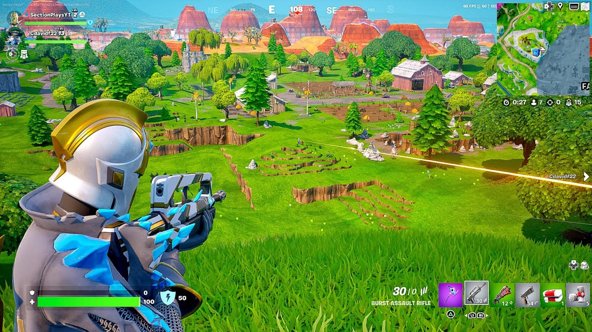
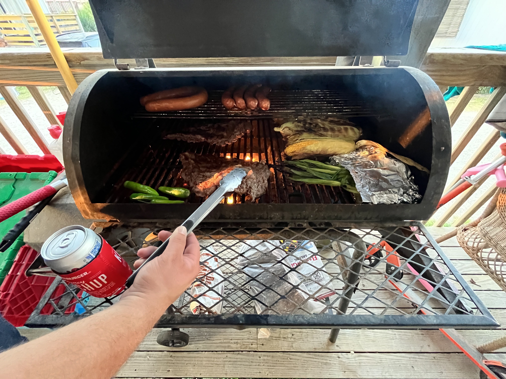
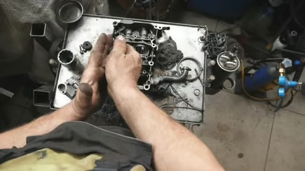

Photo Collection
Home
About Me
Hobbies
Events
Photo Collection
Contact Me
Special Announcements
Jonathan's Photo Collection
Take a glance at my photo collection of hobbies and events!
Fishing

Fishing in Rockport-Fulton for a black drum!
Gaming

A little bit of Fortnite to relax!
Family Activities
Spending some quality family time out at the aquarium in Corpus Christi, TX!
Cooking and BBQ

Throwing down some of the finest meats of the land. Grill it up!
Auto Mechanics

Trying my best to piece this thing back together!
UKC Dog Show
It is always a good day when you are bringing home the gold!